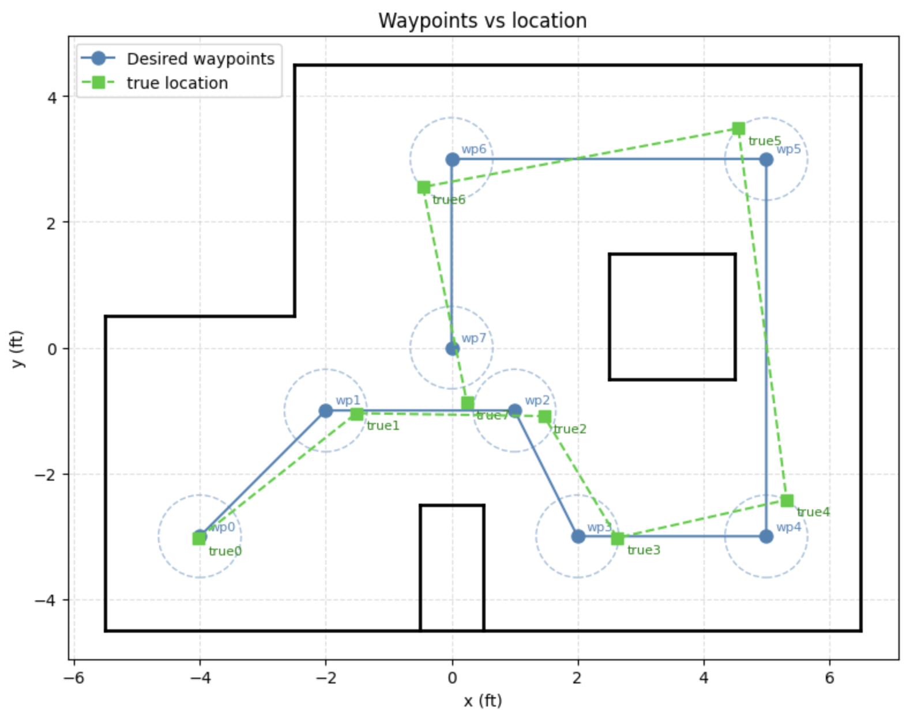

Lab 12: Path Planning and Execution
Overview
The robot drove through a fixed set of 8 waypoints using a simple turn-then-drive routine. The Artemis handled the absolute-heading turns with a gyro PID controller, then used timed drive commands for each straight section. I also added the Lab 11 Bayes filter as a backup correction step. If the ToF reading at a waypoint was more than 5.9 in away from the expected distance, the robot would stop, scan, localize, and reset its heading. That correction was never needed in the final run. The Python script handled the waypoint logic, command sequencing, and Bayes filter update over BLE. The Artemis handled yaw control, drive control, and the observation scan. The full run is shown in Video 1.
Approach
Path Planning
Since the waypoint order was already given and the map was known, I did not need to run a separate graph
search. The planned path was just the provided waypoint sequence. For each leg, the Python script computed
the desired heading using atan2(dy, dx) and sent that heading to the robot as an absolute
world-frame angle.
def calc_target_angle(cur_x, cur_y, next_x, next_y):
return math.degrees(math.atan2(next_y - cur_y, next_x - cur_x))The official waypoint list includes (5,−2) between (5,−3) and (5,3). Because the robot drives straight through that point while moving north, I did not treat it as a separate stop. The route was checked against the map ahead of time, so the robot did not need to make obstacle-avoidance decisions during the run.
Execution: Turn, Pause, Drive, Pause
Per leg, the orchestrator follows this sequence:
- Compute absolute heading to next waypoint from current position
- Send
TURN_ABSwith target heading; wait forTURN_DONEresponse - Sleep 300 ms for mechanical settling
- Send
DRIVE_TOFwith empirically tuned duration; wait forDRIVE_DONE - Sleep 300 ms
- Check ToF error against 5.9 in threshold → localize if exceeded (never triggered)
- Advance to next waypoint
heading = calc_target_angle(
current_loc[0], current_loc[1],
next_wp[0], next_wp[1]
)
ble.send_command(CMD.TURN_ABS, build_turn_cmd(heading))
wait_nav("turn_done", timeout=TURN_PID["duration_ms"] / 1000.0 + 5.0)
time.sleep(0.3)
pid = DRIVE_PID
drive_cmd = (f"0|{pid['kp']}|{pid['ki']}|{pid['kd']}|{leg_dur_ms}|"
f"{pid['min_pwm']}|{pid['max_pwm']}|{pid['right_scale']}|0|0")
ble.send_command(CMD.DRIVE_TOF, drive_cmd)
wait_nav("drive_done", timeout=leg_dur_ms / 1000.0 + 5.0)
time.sleep(0.3)BLE Command Structure
I split the system between the laptop and the robot. Python handled the route, the Bayes filter, and the order of commands sent over BLE. The Artemis handled the low-level actions: turning, driving, reading the ToF sensor, and running the observation scan. The firmware used the following six commands:
| # | Command | Payload | Response |
|---|---|---|---|
| 0 | PING | none | PONG |
| 1 | TURN_ABS | target_deg|kp|ki|kd|dur_ms|min_pwm|max_pwm|loop_ms | TURN_DONE:deg |
| 2 | DRIVE_TOF | target_mm|kp|ki|kd|dur_ms|min_pwm|max_pwm|right_scale|thresh_mm|settle_ms | DRIVE_DONE:mm |
| 3 | GET_TOF | none | TOF:mm |
| 4 | RESET_HEADING | heading_deg | HDG_RESET:deg |
| 5 | OBS_SCAN | count|step_deg|kp|ki|kd|dur_ms|min_pwm|max_pwm|loop_ms | L9ROW:… ×N, OBS_DONE:N |
Each command runs to completion on the Artemis before the next command is sent. After a command finishes,
the robot sends a BLE response, and the Python script waits for the matching nav_state flag
before continuing. This kept the motion sequence simple and avoided sending new commands while the robot
was still moving. The approximate timing for each phase was:
| Phase | Duration |
|---|---|
Turn (TURN_ABS) | 2–5 s depending on angle |
| Settling pause | 0.3 s × 2 per leg |
Drive (DRIVE_TOF) | 0.9–1.8 s (per LEG_DURATIONS_MS) |
| OBS_SCAN (if triggered) | ~27 s (18 steps × 1.5 s each) |
On the Artemis, TURN_ABS waits until the yaw PID finishes and then sends one response message.
For the final run, DRIVE_TOF was used as a timed drive command. With stop_thresh = 0,
the arrival check is disabled, so the loop runs for exactly duration milliseconds.
case TURN_ABS: {
float target = parse_float(payload, 0);
run_yaw_pid_absolute(target); // blocks until done or timeout
tx_estring_value.clear();
tx_estring_value.append("TURN_DONE:");
tx_estring_value.append(g_heading_deg);
tx_characteristic_string.writeValue(tx_estring_value.c_str());
break;
}case DRIVE_TOF: {
float target_dist = parse_float(payload, 0);
unsigned long duration = (unsigned long)parse_float(payload, 4);
int stop_thresh = (int)parse_float(payload, 8);
float right_scale = parse_float(payload, 7);
unsigned long start_ms = millis();
while ((millis() - start_ms) < duration) {
float dist = kalman_update(read_tof_mm());
float error = dist - target_dist;
if (stop_thresh > 0 && fabsf(error) < (float)stop_thresh) break;
float output = drive_kp * error;
int pwm = map_to_pwm(fabsf(output), drive_min_pwm, drive_max_pwm);
drive_both_signed_scaled(output < 0 ? -pwm : pwm, right_scale);
delay(10);
}
motors_coast();
tx_estring_value.clear();
tx_estring_value.append("DRIVE_DONE:");
tx_estring_value.append((int)read_tof_mm());
tx_characteristic_string.writeValue(tx_estring_value.c_str());
break;
}
With target_dist = 0 and stop_thresh = 0, the error stays positive, so the robot
simply drives forward for the requested duration.
def nav_notification_handler(uuid, byte_array):
msg = ble.bytearray_to_string(byte_array).strip()
if msg.startswith("TURN_DONE:"):
nav_state["turn_heading"] = float(msg.split(":", 1)[1])
nav_state["turn_done"] = True
elif msg.startswith("DRIVE_DONE:"):
nav_state["drive_tof"] = int(msg.split(":", 1)[1])
nav_state["drive_done"] = True
elif msg.startswith("L9ROW:"):
nav_state["obs_rows"].append(msg[6:])
elif msg.startswith("OBS_DONE:"):
nav_state["obs_done"] = TrueRotation Control
The Artemis keeps track of g_heading_deg, which represents the robot's current world-frame
heading. When it receives a TURN_ABS command, it computes the relative angle needed to reach
the requested heading, runs the yaw PID, and then saves the target as the new heading. Using absolute
headings helped keep each turn tied to the same reference frame instead of chaining together relative turns.
void run_yaw_pid_absolute(float target_deg) {
float delta = wrap_pm180(target_deg - g_heading_deg);
run_yaw_pid(delta);
g_heading_deg = target_deg;
}The yaw controller integrates the raw gyroscope z-axis reading at about 100 Hz. I then pass the yaw estimate through a 5 Hz IIR low-pass filter before applying the PID terms. When the error is within 2°, the integrator is reset so it does not build up while the robot is already close to the target.
void run_yaw_pid(float target_deg) {
float yaw = 0.0f, yaw_filtered = 0.0f, integral = 0.0f, last_err = 0.0f;
unsigned long start_ms = millis();
unsigned long prev_us = micros();
while ((millis() - start_ms) < (unsigned long)yaw_duration_ms) {
if (myICM.dataReady()) {
myICM.getAGMT();
float dt = (micros() - prev_us) / 1e6f; prev_us = micros();
yaw += myICM.gyrZ() * dt;
float lpf_alpha = 1.0f - expf(-2.0f * M_PI * 5.0f * dt);
yaw_filtered = lpf_alpha * yaw + (1.0f - lpf_alpha) * yaw_filtered;
}
float error = target_deg - yaw_filtered;
if (fabsf(error) < 2.0f) integral = 0.0f;
else integral += error * (yaw_loop_ms / 1000.0f);
float output = yaw_kp * error + yaw_ki * integral
+ yaw_kd * (error - last_err) / (yaw_loop_ms / 1000.0f);
last_err = error;
int pwm = map_to_pwm(fabsf(output), yaw_min_pwm, yaw_max_pwm);
turn_in_place_signed(output < 0 ? -pwm : pwm);
delay(yaw_loop_ms);
}
motors_coast();
}
I used the same gains I had tuned during Labs 9 and 11: Kp = 0.4, Ki = 0.05,
Kd = 0.005, min_pwm = 100, max_pwm = 170, and a 2° deadband.
These values took about 12 tuning runs to settle on. In the final run, the individual turns usually ended
within 1° of their targets. The larger problem was slow gyro drift during the straight driving sections.
By the last three legs, the heading estimate had drifted by +7.4°, +10.5°, and +12.4° from
where it should have been. So the turns themselves were repeatable, but the IMU reference frame slowly
shifted over the course of the run.
Localization
I added the Lab 11 Bayes filter into the navigation loop through
RealRobot.perform_observation_loop(). When called, it sends an OBS_SCAN command
for 18 measurements spaced 20° apart. The Artemis collects the scan, sends the measurements back as
L9ROW messages, and Python passes them into loc.get_observation_data() and
loc.update_step(). The actual Bayes filter update runs offboard in Python. If localization is
triggered, only the estimated heading best_heading is sent back to the Artemis with
RESET_HEADING. The position is kept at the known waypoint coordinate. This lets the filter
correct yaw drift without letting small position errors fight the empirically tuned drive distances.
The localization trigger was based on ToF error. At each waypoint, the script compared the measured wall distance in front of the robot with the expected wall distance from the map. If the difference was greater than 5.9 in, the robot would stop and run the observation scan. In the final run, this threshold was never crossed, so the Bayes filter did not run and there are no belief plots for this trial.
init_constrained_belief(next_wp[0], next_wp[1],
expected_angle_deg=heading,
radius_mm=150, angle_tol_deg=36)
loc.get_observation_data() # sends OBS_SCAN, blocks ~27 s
loc.update_step()
best_x, best_y, best_a = np.unravel_index(np.argmax(loc.bel), loc.bel.shape)
_, _, best_heading = mapper.from_map(best_x, best_y, best_a)
reset_nav_state("hdg_reset_done")
ble.send_command(CMD.RESET_HEADING, f"{best_heading:.2f}")
wait_nav("hdg_reset_done", timeout=3.0)
current_loc = list(next_wp)
The Artemis completes all 18 scan positions before sending the data back over BLE. That avoids BLE timing
delays between angle samples. Once the scan is finished, it streams the L9ROW measurements in
order and then sends OBS_DONE.
case OBS_SCAN: {
int num_steps = (int)parse_float(payload, 0);
float step_angle = parse_float(payload, 1);
for (int i = 0; i < num_steps; i++) {
run_yaw_pid((float)i * step_angle);
scan_readings[i] = read_tof_blocking();
}
for (int i = 0; i < num_steps; i++) {
tx_estring_value.clear();
tx_estring_value.append("L9ROW:");
tx_estring_value.append((float)(i * step_angle));
tx_estring_value.append(",");
tx_estring_value.append(scan_readings[i]);
tx_characteristic_string.writeValue(tx_estring_value.c_str());
delay(1);
}
tx_estring_value.clear();
tx_estring_value.append("OBS_DONE:");
tx_estring_value.append(num_steps);
tx_characteristic_string.writeValue(tx_estring_value.c_str());
break;
}Results
The robot completed the full path in one run. Every waypoint was reached within the 8 in success radius, and the robot came within 6 in of each one. Figure 1 shows the lab map from above, with 8 in circles around the target waypoints and the measured robot positions plotted at each stop.

| WP | Target (ft) | Measured Position (ft) | XY Error (in) |
|---|---|---|---|
| 1 | (−2, −1) | (−1.51, −1.04) | 5.9 |
| 2 | (1, −1) | (1.47, −1.09) | 5.7 |
| 3 | (2, −3) | (2.63, −3.02) | 7.6 |
| 4 | (5, −3) | (5.32, −2.42) | 8.0 |
| 5 | (5, 3) | (4.56, 3.49) | 8.0 |
| 6 | (0, 3) | (−0.46, 2.55) | 7.7 |
| 7 | (0, 0) | (0.24, −0.62) | 8.0 |
Discussion
The timed drive approach worked well for this run because the floor conditions were consistent and the battery was fresh. The 5.9 in ToF threshold was mainly there as a safety check for cases where the robot drifted farther than expected. The later waypoints were close to the 8 in boundary, especially WP 7, so a larger drift event would likely have triggered the localization fallback.
Using absolute world-frame headings kept the turn commands from stacking relative-angle error from leg to leg. The main source of error was not the turn PID itself, but gyro integration drift during the straight drive segments. By the final legs, the heading estimate had shifted by about +12°. The localization fallback was designed to correct that kind of drift by resetting the heading from a scan, but the robot stayed close enough to the path that the fallback was not needed in the final run.